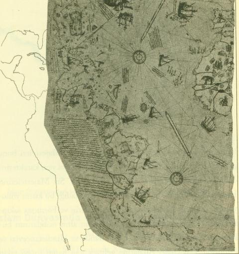

«Cava» atlası 1511 yılında Malakka’nın işgalinden çok kısa bir süre sonra işgalci Portekizlilerin eline geçmiş ve burayı alan Alfonso de Alburquerque tarafından Kral I. Emanuel’e (ö. 1521) gönderilmişti. Bu atlasa iliştirilerek Kral’a gönderilen mektupta Alfonso şöyle demektedir: «Majestenize, Cavalı bir gemi pilotu tarafından yapılmış çok büyük bir atlasın kopyasından bir kısmını yolluyorum. Bu, Ümit Burnunu, Portekiz’i, Brezilya’yı, Kızıldeniz’i, Fars Körfezini, Baharat Adalarını [Moluk Adalarını], gemilerin izlediği Çin’den ve Formosa’dan giden direkt yolu gösteren yelken rotalarını, bunların yanı sıra birbirlerine sınır olan [bu ülkelerin] iç taraflarını tasvir etmektedir. Bana öyle geliyor ki, bu, günümüze kadar gördüklerimin en güzeli. Majesteleri bunu görmekle çok mutlu olacaklardır. Yer adları Cava yazı karakterindedir. Yanımda okuryazar Cavalı birisi vardı. Siz Majestelerine, Francisco Rodrigues’in, orijinalinden kopyaladığı bu kısmı yolluyorum. Bununla Majesteniz bizzat Çinlilerin ve Formoza sakinlerinin nereden geldiklerini, gemilerinizin altın ocaklarının bulunduğu Karanfil Adaları’na, Cava, Banda ve Hindistan cevizi ve Hindistan cevizi çiçeği Adalarına gelmek için hangi rotayı takip etmeleri gerektiğini, Siyam Krallığı’nı, Çinlilerin gemileriyle dolaştıkları ve oradan itibaren daha ileri gitmeyerek döndükleri Çin Burnu’nu görecektir. Orijinali Frol de la Mar’la birlikte [deniz kazasında] kayboldu. Siz Majestelerine açık ve seçik bir şekilde tasvirlerde bulunabilmek için, o gemi pilotu ve Pero Dalpoem ile birlikte bu haritanın içeriği hakkında görüş alışverişinde bulundum. Bu harita son derece doğru ve meşhurdur, çünkü deniz yolculuğunda kullanılmaktadır. Bu haritada eksik olan, «Selat» diye adlandırılan takım adalardır [Malakka ve Cava arasında].» (Katalog I, s. 70-71) 214
Aslının 1474 yılında Floransa’dan Lisbona Paolo Toscanelli tarafından gönderilen Kristof Kolomb’un batıya doğru seyahatini sağlayıp bazı ilaveler yapılmış bulunan Arapça haritanın İtalyanca redaksiyonundan ibaret olduğu anlaşılıyor (F. Sezgin, Geschichte des arabischen Schrifttums, XIII, 163-164).
